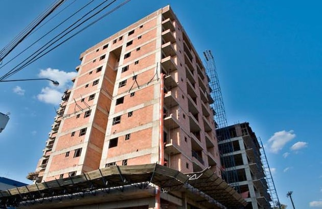
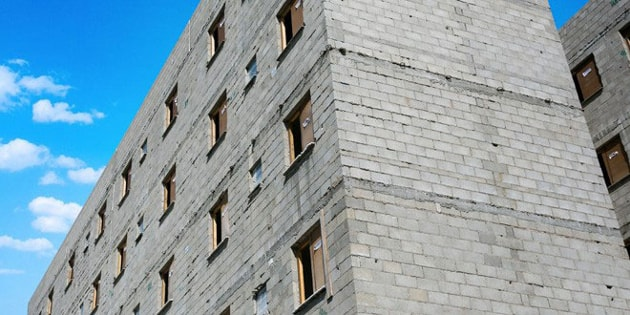
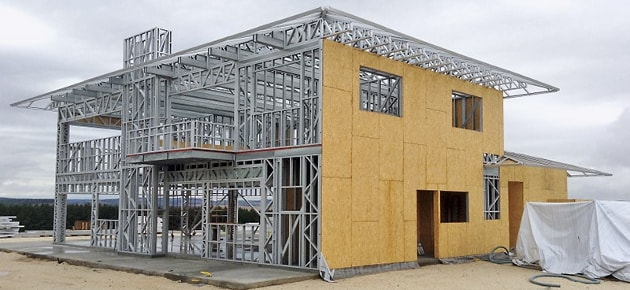

Alvenaria de vedacão ou convencional

Edificações de alvenaria de vedação ou convencional compõem-se por vigas, pilares e lajes de concreto armado. Estes elementos fazem parte da estrutura para a sustentação da edificação e a alvenaria tem função somente de vedar e separar ambientes. Para isso, normalmente são utilizados os blocos cerâmicos.
Alvenaria Estructural

Na alvenaria estrutural, une-se a estrutura e a vedação da edificação, utilizando blocos cerâmicos ou de concreto, os dois específicos para este fim. O projeto de alvenaria estrutural deve ser muito bem detalhado e já compatibilizados com os projetos elétrico e hidro-sanitário."
Steel Frame

O Steel Frame é um sistema construtivo industrializado e racionalizado. Sua estrutura é formada por perfis de aço galvanizado e seu fechamento é feito por meio de placas cimentícias, de madeira ou drywall. A principal diferença do steel frame para os outros sistemas é a limpeza do canteiro de obras, pois a geração de resíduos é mínima e não há necessidade do uso de água.